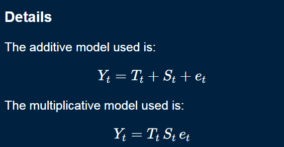
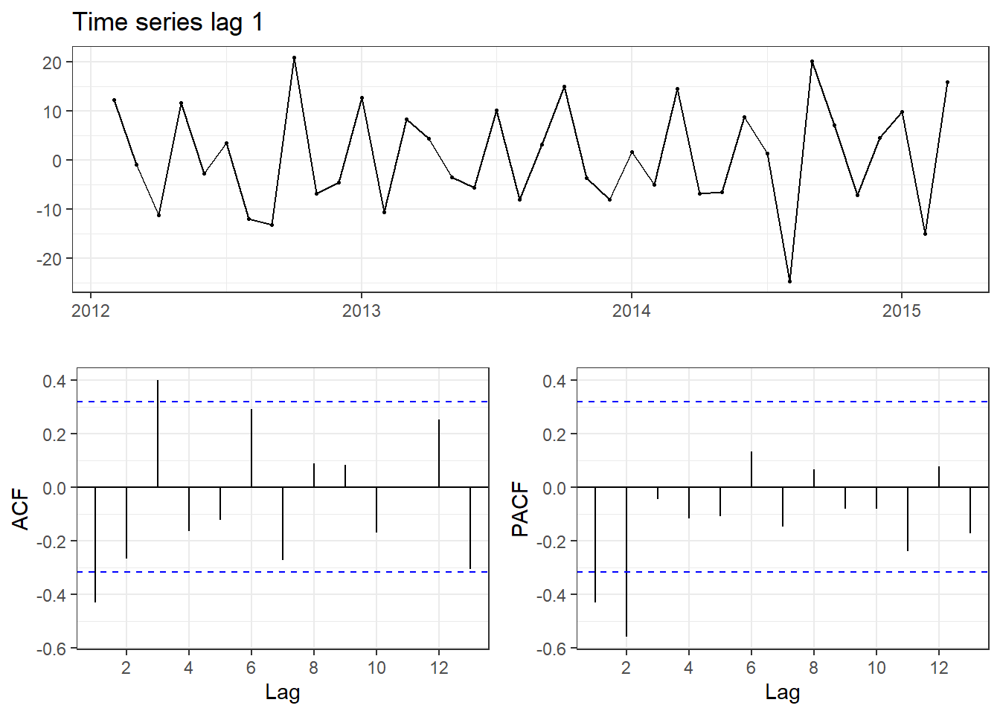
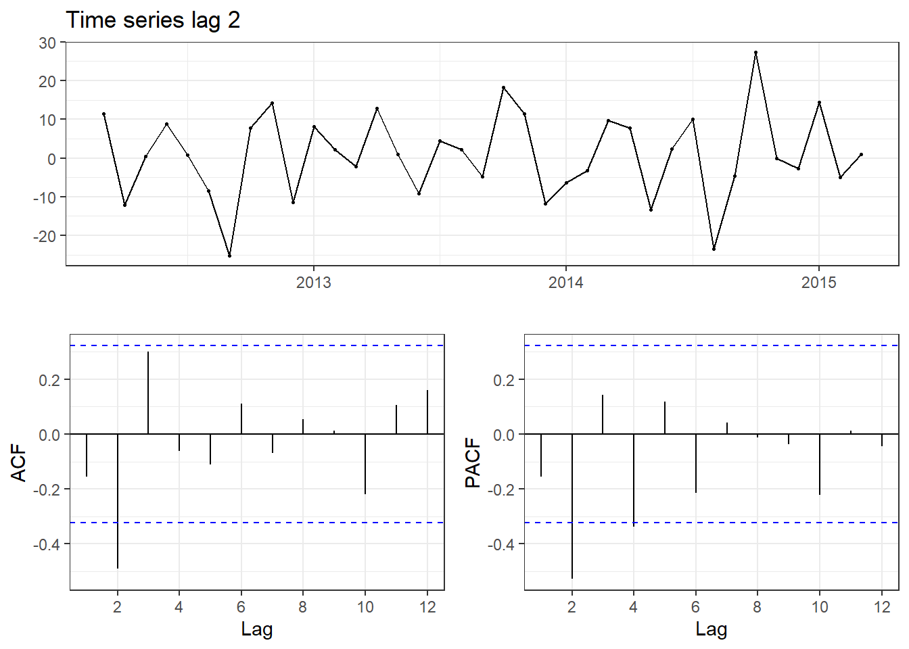
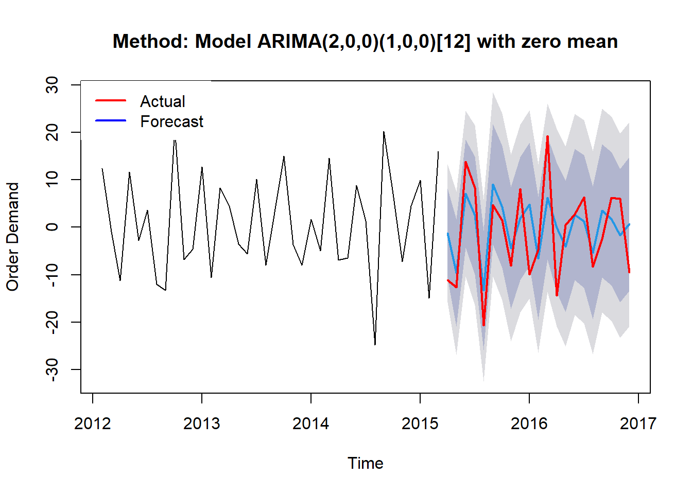

Bạn có thể quay lại trang đầu tiên để lấy dữ liệu gốc và các bước để chỉnh sửa dữ liệu ở Giới thiệu.
Sau khi đã chuyển đổi dữ liệu, tiếp theo chúng ta sẽ chia dữ liệu theo tỉ lệ 70:30. Lý do chia ra là vì ở phần cuối, chúng ta sẽ sử dụng phần 30% bộ dữ liệu để đánh giá mô hình được xây dựng trên 70% bộ dữ liệu.
Việc chia dữ liệu này cũng khá phổ biến vì ta có thể đánh giá mô hình bằng chính dữ liệu thực tế và không cần tốn thời gian và công sức để theo dõi mô hình trong tương lai nữa.
Code
#First we will divde the data into training data and testing data in 70-30:#Create ts object for month demand variable:training_df<-month_df[month_df$datetime <=as.Date("2015-03-01"),]testing_df <-month_df[month_df$datetime >=as.Date("2015-03-01"),]
Nhìn hình dưới đây, các bạn có thể hiểu là nhiệm vụ của mình sẽ là xây dựng mô hình dựa vào dữ liệu đã thu được trước ngày 01-03-2015 và dự đoán giá trị cho khoảng thời gian từ 01-03-2015 đến 01-12-2016.
Code
demand_training<-ts(training_df$month_demand,frequency =12,start =c(2012,1))demand_testing<-ts(testing_df$month_demand,frequency =12,start =c(2015,3))## Hiển thị hóa dữ liệu về demand:library(dygraphs)lines<-cbind(demand_training, demand_testing)dygraph(lines,main ="Training and testing data", ylab ="Quantity order (Unit: Millions)") %>%dySeries("demand_training", label ="Training data") %>%dySeries("demand_testing", label ="Testing data") %>%dyOptions(fillGraph =TRUE, fillAlpha =0.4) %>%dyRangeSelector(height =20)
1.1 Phân tích thành phần trong time-series dữ liệu:
Về thông tin của dữ liệu, đây là dữ liệu thuộc dạng time-series nghĩa là chuỗi dữ liệu theo thời gian nên nó sẽ có các đặt tính chung như:
Trend: Tăng, giảm dài hạn hoặc chuyển động đứng yên.
Seasonal: Các mô hình có thể dự đoán được ở những khoảng thời gian cố định.
Cycle: Biến động không có chu kỳ nhất quán.
Noise: Sai số còn sót lại không giải thích được.
Vậy mục tiêu của việc phân tích time series là để tìm ra thành phần seasonal trong vì nó có tính lặp lại và có thể dùng để dự đoán cho tương lai. Ngoài ra, thành phần trend cũng cần được quan tâm vì nó thể hiện xu hướng của dữ liệu trong tương lai.
Trong R, ta có thể phân tích dễ dàng với hàm decompose() như code dưới đây.
Về công thức tính, hàm decompose() dựa vào kĩ thuật Moving Averages để tính trung bình giá trị theo 1 khoảng thời gian (Vd: 3 tháng 6 tháng hoặc 1 năm).

Hình 3: Additive and multiplicative model
Có 2 mô hình gồm Additive và Multiplicative có thể sử dụng. Ở mặc định, hàm decompose() tính theo mô hình Additive, còn bạn muốn tính theo mô hình Multiplicative thì phải thêm đối số type = "multiplicative".
Code
library(TSstudio)ts_decompose(demand_training, type ="both")
Khi mức độ biến động của seasonal hoặc sự biến đổi xung quanh trend-cycle không thay đổi theo mức độ của chuỗi thời gian, mô hình Additive sẽ phù hợp hơn mô hình Multiplicative.
Nhìn sơ bộ, ta có thể thấy xu hướng tăng (trend) của số lượng đơn đặt hàng. Về phần random thì sẽ có 1 khoảng từ (-10,5) số đơn là tự nhiên xảy ra, nghĩa là giá trị dự đoán có thể lệch từ -10 đến 5 đơn hàng và sai lệch này là do tự nhiên.
1.2 Dự đoán bằng mô hình ARIMA:
Trên thực tế, phần phân tích thành các thành phần của time series chỉ đưa ra dự đoán định tính, không thể dự đoán bằng các dữ liệu trên mà phải cần thông qua mô hình cụ thể. Dưới đây là giới thiệu về mô hình ARIMA.
1.2.1 Định nghĩa về ARIMA:
Theo (phamdinhkhanh 2019), Mô hình ARIMA “sử dụng đầu vào chính là những tín hiệu quá khứ của chuỗi được dự báo để dự báo nó. Các tín hiệu đó bao gồm: Chuỗi tự hồi qui AR (auto regression) và chuỗi trung bình trượt MA (moving average).
Hầu hết các chuỗi thời gian sẽ có xu hướng tăng hoặc giảm theo thời gian, do đó yếu tố chuỗi dừng thường không đạt được. Trong trường hợp chuỗi không dừng thì ta sẽ cần biến đổi sang chuỗi dừng bằng sai phân. Khi đó tham số đặc trưng của mô hình sẽ có thêm thành phần bậc của sai phân d và mô hình được đặc tả bởi 3 tham số ARIMA(p, d, q)“.
Mô hình được xây dựng “dựa trên giả thuyết: Stationary series (Chuỗi dừng) đòi hỏi Phương sai sai số không đổi và Nhiễu trắng (White noise), cụ thể trong đó:
Stationary series: điều kiện là trung bình của chuỗi là constant (bất biến), phương sai (variance) của chuỗi phải có tính đồng nhất (homoscedasticity) và hiệp phương sai (covariance) giữa giá trị t và t+1 phải không liên quan tới nhau.
Lưu ý
Nếu chuỗi dữ liệu không phải là chuỗi dùng thì bạn sẽ không xây dựng được mô hình chuỗi thời gian (time-series model)
Nhiễu trắng là: một thành phần ngẫu nhiên thể hiện cho yếu tố không thể dự báo của model và không có tính qui luật.
Và để thỏa mãn giả định này, cần tính toán các chỉ số trên và đánh giá và điều này khá phức tạp. Trong R, ta có hàm adf.test() có thể kiểm tra vấn đề này nhanh hơn.
Code
library(tseries)adf.test(demand_training) ## p-value = 0.3779 > 0.05 means this series is not stationary
Augmented Dickey-Fuller Test
data: demand_training
Dickey-Fuller = -2.4991, Lag order = 3, p-value = 0.3779
alternative hypothesis: stationary
Như vậy, ta thấy chuỗi dữ liệu này không phải chuỗi dừng vì giá trị p = 0.3779 > 0.05 nghĩa là chấp nhận giả thuyết H0: Chuỗi này là chuỗi không dừng.
Trong time-series analyst, ta sẽ có cách để xử lí chuỗi thành chuỗi dừng. Đó là tính sự khác nhau (Difference) giữa giá trị t và giá trị của nó ở quá khứ t-1,t-2,…
Trong R, bạn có thể tính bằng cách:
diff(series, lag = n): tính sự khác nhau giữa các thời điểm t và t-n.
log(series): chuyển time-series sang dạng log.
Này tùy thuộc vào công thức toán học bạn muốn định nghĩa, miễn sao bạn có thể xác định được chuỗi dừng là đạt.
Code
#First we will calculate the different in demand product monthly:#Check stationary assumption:test<-lapply(1:3, function(x) { a<-diff(demand_training, lag = x)adf.test(a)$p.value} ) #p<0,05 is accepted## Second transform it to dataframe object:test<-data.frame(test)colnames(test)<-c("Lag 1","Lag 2","Lag 3")## Finally plot the result:library(gt)library(gtExtras)gt(test) %>%cols_align(align ="left",columns ="Lag 1" ) %>%cols_align(align ="center",columns ="Lag 2" ) %>%tab_header(title =md("**Checking stationary assumption**"),subtitle = glue::glue("Time from {min(month_df$datetime)} to 01-03-2015")) %>%tab_source_note(source_note ="Alternative hypothesis: stationary") %>%gt_theme_538()
Checking stationary assumption
Time from 2012-01-01 to 01-03-2015
Lag 1
Lag 2
Lag 3
0.01
0.01
0.152641
Alternative hypothesis: stationary
Kết quả testing cho thấy chỉ có chuỗi 1 và 2 đạt yêu cầu, chuỗi 3 không phải chuỗi dừng vì p-value = 0.107 > 0.05.
1.2.2.2 Tính toán giá trị PACF và ACF:
1.2.2.2.1 Định nghĩa về PACF và ACF:
PACF (Partial Autocorrelation Function) và ACF (Autocorrelation Function) là 2 công thức tính thuộc Autocorrelation Analyst - 1 bước quan trọng trong việc phân tích chuỗi dữ liệu thời gian. Mục tiêu của Autocorrelation analyst là tìm ra các mẫu (pattern) giữa nhiều chuỗi thời gian và kiểm tra tính ngẫu nhiên.
1.2.2.2.2 Thực hành trên R:
Sau khi đã xác định được chuỗi dừng, bước tiếp theo là xác định các tham số (p, d, q) cho mô hình ARIMA.
Trong R có hàm ggtsdisplay của package forecast sẽ hiển thị cả ACF, PACF và Time series plot của đối tượng mà bạn gán. Còn nếu bạn muốn hiển thị riêng giá trị ACF hoặc PACF thì dùng hàm Acf hoặc Pacf để tính và dùng hàm autoplot() để hiển thị biểu đồ.
Code
#Rename of two time series:ts1<-diff(demand_training, lag =1)ts2<-diff(demand_training, lag =2)#Plot value ACF for 2 series:library(forecast)ggtsdisplay(ts1,main ="Time series lag 1",theme=theme_bw())ggtsdisplay(ts2,main ="Time series lag 2",theme=theme_bw())


Dựa vào tricks từ (Tavish Srivastava 2023), ta sẽ dựa vào giá trị PACF để xác định bậc của AR và ACF để xác định bậc của MA.
Ví dụ ở trên, đối với chuỗi lag 1, giá trị PACF có sự đứt gãy (cut off) ở bậc 2 đến bậc 3 nên có thể thuộc AR(3). Còn giá trị ACF thì có thể thuộc MA(2) hoặc rõ ràng hơn là MA(3). Còn lại, đối với chuỗi lag 2, các bạn có thể làm tương tự.
Vậy mô hình tự chọn cuối cùng là ARIMA(3,0,2).
1.2.2.3 Lựa chọn mô hình tốt nhất:
Thực tế, trong R có hàm auto.arimađể chúng ta lựa chọn và so sánh nhiều mô hình ARIMA một cách tự động và không nặng về code như dưới đây. Nó sẽ tự liệt kê ra các mô hình phù hợp và chọn ra mô hình tốt nhất.
Ngoài ra, nếu bạn muốn tìm hiểu sâu về cách xây dựng mô hình ARIMA, bạn có thể tham khảo thêm bài blog (Dũng, n.d.). Anh Chí Dũng có khá nhiều bài viết hay về cách sử dụng R trong nghiên cứu và phân tích kinh tế, bạn có thể tham khảo trang blog của ảnh thông qua đường link chidungkt.
Code
#Select the best model:model<-auto.arima(ts1,trace = T)
ARIMA(2,0,2)(1,0,1)[12] with non-zero mean : 279.6301
ARIMA(0,0,0) with non-zero mean : 291.5234
ARIMA(1,0,0)(1,0,0)[12] with non-zero mean : 285.1005
ARIMA(0,0,1)(0,0,1)[12] with non-zero mean : Inf
ARIMA(0,0,0) with zero mean : 289.5102
ARIMA(2,0,2)(0,0,1)[12] with non-zero mean : 278.2485
ARIMA(2,0,2) with non-zero mean : 276.6431
ARIMA(2,0,2)(1,0,0)[12] with non-zero mean : 277.2391
ARIMA(1,0,2) with non-zero mean : Inf
ARIMA(2,0,1) with non-zero mean : 274.6588
ARIMA(2,0,1)(1,0,0)[12] with non-zero mean : 274.4807
ARIMA(2,0,1)(1,0,1)[12] with non-zero mean : 276.6914
ARIMA(2,0,1)(0,0,1)[12] with non-zero mean : 275.6882
ARIMA(1,0,1)(1,0,0)[12] with non-zero mean : Inf
ARIMA(2,0,0)(1,0,0)[12] with non-zero mean : 271.6811
ARIMA(2,0,0) with non-zero mean : 272.1458
ARIMA(2,0,0)(1,0,1)[12] with non-zero mean : 273.7323
ARIMA(2,0,0)(0,0,1)[12] with non-zero mean : 272.8549
ARIMA(3,0,0)(1,0,0)[12] with non-zero mean : 274.4922
ARIMA(3,0,1)(1,0,0)[12] with non-zero mean : 277.4715
ARIMA(2,0,0)(1,0,0)[12] with zero mean : 269.4654
ARIMA(2,0,0) with zero mean : 270.5103
ARIMA(2,0,0)(1,0,1)[12] with zero mean : 271.365
ARIMA(2,0,0)(0,0,1)[12] with zero mean : 270.7772
ARIMA(1,0,0)(1,0,0)[12] with zero mean : 282.7531
ARIMA(3,0,0)(1,0,0)[12] with zero mean : 272.0724
ARIMA(2,0,1)(1,0,0)[12] with zero mean : 272.0509
ARIMA(1,0,1)(1,0,0)[12] with zero mean : 275.1242
ARIMA(3,0,1)(1,0,0)[12] with zero mean : 274.8562
Best model: ARIMA(2,0,0)(1,0,0)[12] with zero mean
1.2.2.4 So sánh giá trị dự đoán từ training data với testing data:
Sau khi đã xây dựng mô hình, ta sẽ dùng nó để dự đoán và so sánh với dữ liệu thực tế từ bộ dữ liệu testing data.
Code
#Forecast by training model:training_forecast<-forecast(model,h =21)
Bảng trình bày các giá trị dự đoán theo từng tháng. Ta thấy chỉ có 4/21 thời điểm mà giá trị thực tế vượt ra giá trị dự đoán trong khoảng tin cậy 80%. Còn đối với giá trị dự đoán trong khoảng tin cậy 95% thì đều đạt yêu cầu.
Code
#Calculate RMSE:actual<-diff(demand_testing,1)accuracy<-data_frame(Period =paste(month(testing_df$datetime),year(testing_df$datetime),sep ="/")[-1],Actual = actual %>%as.vector(), High.80 = training_forecast$upper[,1],Low.80 = training_forecast$lower[,1],High.95 = training_forecast$upper[,2],Low.95 = training_forecast$lower[,2]) %>%mutate(Check.80 =ifelse(Actual <= High.80& Actual >= Low.80,"Pass","Fail"),Check.95 =ifelse(Actual <= High.95& Actual >= Low.95,"Pass","Fail"))## Finally plot the resultgt(accuracy) %>%tab_header(title =md("**Comparing the accuracy of forecasting**"),subtitle = glue::glue("Forecasting from {min(testing_df$datetime)} to {max(testing_df$datetime)}")) %>%tab_source_note(source_note =str_glue("Method: Model {training_forecast$method}")) %>%gt_theme_538() %>%data_color(columns = Check.80,method ="factor",palette =c("red","darkgreen") ) %>%data_color(columns = Check.95,method ="factor",palette =c("darkgreen","red") )
Comparing the accuracy of forecasting
Forecasting from 2015-03-01 to 2016-12-01
Period
Actual
High.80
Low.80
High.95
Low.95
Check.80
Check.95
4/2015
-11.157
8.2151971
-10.812921
13.251636
-15.84936
Fail
Pass
5/2015
-12.621
1.6260371
-20.888910
7.585384
-26.84826
Pass
Pass
6/2015
13.813
18.5336717
-4.315841
24.581572
-10.36374
Pass
Pass
7/2015
8.293
14.9318430
-9.908314
21.506636
-16.48311
Pass
Pass
8/2015
-20.715
-0.7494574
-25.879586
5.902086
-32.53113
Pass
Pass
9/2015
4.671
21.7271249
-3.643527
28.442331
-10.35873
Pass
Pass
10/2015
1.452
17.1916812
-8.576132
24.012009
-15.39646
Pass
Pass
11/2015
-8.055
8.5209607
-17.257552
15.344121
-24.08071
Pass
Pass
12/2015
8.132
14.8015863
-11.075451
21.650824
-17.92469
Pass
Pass
1/2016
-9.978
17.8052582
-8.139698
24.672473
-15.00691
Fail
Pass
2/2016
-4.696
6.4211445
-19.524421
13.288521
-26.39180
Pass
Pass
3/2016
19.274
19.2007071
-6.774814
26.076012
-13.65012
Fail
Pass
4/2016
-14.336
13.5655001
-13.694775
20.780859
-20.91013
Fail
Pass
5/2016
0.513
9.7760700
-17.849339
17.088074
-25.16134
Pass
Pass
6/2016
2.751
16.5398455
-11.170685
23.874380
-18.50522
Pass
Pass
7/2016
6.377
15.2198557
-12.789469
22.633476
-20.20309
Pass
Pass
8/2016
-8.324
8.6649731
-19.373047
16.086189
-26.79426
Pass
Pass
9/2016
-2.439
17.5484745
-10.538978
24.982774
-17.97328
Pass
Pass
10/2016
6.244
15.8818767
-12.264517
23.331777
-19.71442
Pass
Pass
11/2016
5.996
12.3351533
-15.811609
19.785151
-23.26161
Pass
Pass
12/2016
-9.544
14.7681518
-13.396724
22.222944
-20.85152
Pass
Pass
Method: Model ARIMA(2,0,0)(1,0,0)[12] with zero mean
Và dưới đây là biểu đồ hiển thị giá trị trung bình (đường màu xanh dương), giá trị dự đoán trong khoảng tin cậy 80% (đường màu xám đậm) và khoảng tin cậy 95% (đường màu xám nhạt).
Ngoài ra ta cũng tính các chỉ số MAE và RMSE của mô hình như sau:
Code
## Calculating MAE metric:sum =0for (i in1:nrow(accuracy)){ sum =abs(accuracy$Actual[i]-training_forecast$mean[i]) + sum} MAE = sum/nrow(accuracy) ## Calculating RMSE metric:RMSE=sqrt(mean((accuracy$Actual - training_forecast$mean)^2))
Code
#Use chart for presenting the differents:plot(training_forecast,main =str_glue("Method: Model {training_forecast$method}"),xlab ="Time",ylab ="Order Demand")lines(actual, col ="red",lwd ="2")legend("topleft",legend =c("Actual","Forecast"),col =c("red","blue"),box.lty =0,lty =1,cex =1,lwd =2)

Ta thấy kết quả dự đoán cũng ổn nhưng vẫn chưa bám sát thực tế. Vì vậy tiếp theo chúng ta sẽ làm cho mô hình tốt hơn ở trang sau Mô hình SARIMA
---title: "Mô hình ARIMA"subtitle: "Việt Nam, 2024"categories: ["SupplyChainManagement", "Forecasting"]bibliography: references.bibformat: html: code-fold: true code-tools: truenumber-sections: true---# Thực hành trong Rstudio:Bạn có thể quay lại trang đầu tiên để lấy dữ liệu gốc và các bước để chỉnh sửa dữ liệu ở [Giới thiệu](index.qmd).```{r}#| warning: false#| message: false#| echo: false#Call packages:pacman::p_load(rio, here, janitor, tidyverse, dplyr, magrittr, lubridate, stringr )#Import file:product_demand<-import("C:\\Users\\locca\\Downloads\\Historical Product Demand.csv")#Change to suitable class (I change the name dataset to product_demand to shortly write)product_demand <-product_demand %>%mutate(Date =as.Date(Date,format ="%Y/%m/%d"),Product_Category =as.factor(Product_Category))product_demand$Order_Demand <-gsub("[(]", "-", product_demand$Order_Demand)product_demand$Order_Demand <-gsub("[)]", "", product_demand$Order_Demand)product_demand$Order_Demand <-as.numeric(product_demand$Order_Demand)#Then I will create a lot of cols contain year, month, week data and just select from 2012 to 2016:product_demand <-product_demand %>%mutate(Month =month(Date),Year =year(Date),Week_day =wday(Date)) %>%filter(Year %in%c(2016:2012))#So I will calculate the total order demand divided by year and month:month_df<-product_demand %>%group_by(Year,Month) %>%summarise(month_demand =round(sum(Order_Demand,na.rm = T)/10^6,3)) %>%mutate(datetime =as.Date(str_c(Year, Month,"1",sep ="-"))) %>%ungroup() %>%select(-c(Year,Month))```Sau khi đã chuyển đổi dữ liệu, tiếp theo chúng ta sẽ chia dữ liệu theo tỉ lệ 70:30. Lý do chia ra là vì ở phần cuối, chúng ta sẽ sử dụng phần 30% bộ dữ liệu để đánh giá mô hình được xây dựng trên 70% bộ dữ liệu.Việc chia dữ liệu này cũng khá phổ biến vì ta có thể đánh giá mô hình bằng chính dữ liệu thực tế và không cần tốn thời gian và công sức để theo dõi mô hình trong tương lai nữa.```{r}#| warning: false#| message: false#First we will divde the data into training data and testing data in 70-30:#Create ts object for month demand variable:training_df<-month_df[month_df$datetime <=as.Date("2015-03-01"),]testing_df <-month_df[month_df$datetime >=as.Date("2015-03-01"),]```Nhìn hình dưới đây, các bạn có thể hiểu là nhiệm vụ của mình sẽ là xây dựng mô hình dựa vào dữ liệu đã thu được trước ngày `01-03-2015` và dự đoán giá trị cho khoảng thời gian từ `01-03-2015` đến `01-12-2016`.```{r}#| warning: false#| message: falsedemand_training<-ts(training_df$month_demand,frequency =12,start =c(2012,1))demand_testing<-ts(testing_df$month_demand,frequency =12,start =c(2015,3))## Hiển thị hóa dữ liệu về demand:library(dygraphs)lines<-cbind(demand_training, demand_testing)dygraph(lines,main ="Training and testing data", ylab ="Quantity order (Unit: Millions)") %>%dySeries("demand_training", label ="Training data") %>%dySeries("demand_testing", label ="Testing data") %>%dyOptions(fillGraph =TRUE, fillAlpha =0.4) %>%dyRangeSelector(height =20)```## Phân tích thành phần trong time-series dữ liệu:Về thông tin của dữ liệu, đây là dữ liệu thuộc dạng time-series nghĩa là chuỗi dữ liệu theo thời gian nên nó sẽ có các đặt tính chung như:- Trend: Tăng, giảm dài hạn hoặc chuyển động đứng yên.- Seasonal: Các mô hình có thể dự đoán được ở những khoảng thời gian cố định.- Cycle: Biến động không có chu kỳ nhất quán.- Noise: Sai số còn sót lại không giải thích được.Vậy mục tiêu của việc phân tích time series là để tìm ra thành phần *seasonal* trong vì nó có tính lặp lại và có thể dùng để dự đoán cho tương lai. Ngoài ra, thành phần *trend* cũng cần được quan tâm vì nó thể hiện xu hướng của dữ liệu trong tương lai.Trong R, ta có thể phân tích dễ dàng với hàm `decompose()` như code dưới đây.Về công thức tính, hàm `decompose()` dựa vào kĩ thuật Moving Averages để tính trung bình giá trị theo 1 khoảng thời gian (Vd: 3 tháng 6 tháng hoặc 1 năm).{fig-alt="(Nguồn: R documentation)" fig-align="center" width="609"}Có 2 mô hình gồm *Additive* và *Multiplicative* có thể sử dụng. Ở mặc định, hàm `decompose()` tính theo mô hình *Additive*, còn bạn muốn tính theo mô hình *Multiplicative* thì phải thêm đối số `type = "multiplicative"`.```{r}#| warning: false#| message: false#| fig-cap: "Khi mức độ biến động của seasonal hoặc sự biến đổi xung quanh trend-cycle không thay đổi theo mức độ của chuỗi thời gian, mô hình Additive sẽ phù hợp hơn mô hình Multiplicative."library(TSstudio)ts_decompose(demand_training, type ="both")```Nhìn sơ bộ, ta có thể thấy xu hướng tăng (trend) của số lượng đơn đặt hàng. Về phần random thì sẽ có 1 khoảng từ (-10,5) số đơn là tự nhiên xảy ra, nghĩa là giá trị dự đoán có thể lệch từ -10 đến 5 đơn hàng và sai lệch này là do tự nhiên.## Dự đoán bằng mô hình ARIMA:Trên thực tế, phần phân tích thành các thành phần của time series chỉ đưa ra dự đoán định tính, không thể dự đoán bằng các dữ liệu trên mà phải cần thông qua mô hình cụ thể. Dưới đây là giới thiệu về mô hình ARIMA.### Định nghĩa về ARIMA:Theo [@phamdinhkhanh2019], Mô hình ARIMA "sử dụng đầu vào chính là những tín hiệu quá khứ của chuỗi được dự báo để dự báo nó. Các tín hiệu đó bao gồm: Chuỗi tự hồi qui AR (auto regression) và chuỗi trung bình trượt MA (moving average).Hầu hết các chuỗi thời gian sẽ có xu hướng tăng hoặc giảm theo thời gian, do đó yếu tố chuỗi dừng thường không đạt được. Trong trường hợp chuỗi không dừng thì ta sẽ cần biến đổi sang chuỗi dừng bằng sai phân. Khi đó tham số đặc trưng của mô hình sẽ có thêm thành phần bậc của sai phân d và mô hình được đặc tả bởi 3 tham số ARIMA(p, d, q)".Mô hình được xây dựng "dựa trên giả thuyết: *Stationary series* (Chuỗi dừng) đòi hỏi *Phương sai sai số không đổi* và Nhiễu trắng (*White noise*), cụ thể trong đó:- Stationary series: điều kiện là trung bình của chuỗi là constant (bất biến), phương sai (variance) của chuỗi phải có tính đồng nhất (homoscedasticity) và hiệp phương sai (covariance) giữa giá trị t và t+1 phải không liên quan tới nhau. ::: {.callout-warning appearance="minimal"} ## Lưu ý Nếu chuỗi dữ liệu không phải là chuỗi dùng thì bạn sẽ không xây dựng được mô hình chuỗi thời gian (time-series model) :::- Nhiễu trắng là: một thành phần ngẫu nhiên thể hiện cho yếu tố không thể dự báo của model và không có tính qui luật.[{fig-alt="A Complete Tutorial on Time Series Modeling in R" fig-align="center"}](https://www.analyticsvidhya.com/blog/2015/12/complete-tutorial-time-series-modeling/)### Phân tích ARIMA bằng R:#### Kiểm tra chuỗi dừng:Và để thỏa mãn giả định này, cần tính toán các chỉ số trên và đánh giá và điều này khá phức tạp. Trong R, ta có hàm `adf.test()` có thể kiểm tra vấn đề này nhanh hơn.```{r}#| warning: false#| message: falselibrary(tseries)adf.test(demand_training) ## p-value = 0.3779 > 0.05 means this series is not stationary```Như vậy, ta thấy chuỗi dữ liệu này không phải chuỗi dừng vì giá trị p = 0.3779 \> 0.05 nghĩa là chấp nhận giả thuyết H0: Chuỗi này là chuỗi không dừng.Trong time-series analyst, ta sẽ có cách để xử lí chuỗi thành chuỗi dừng. Đó là tính sự khác nhau (*Difference*) giữa giá trị t và giá trị của nó ở quá khứ t-1,t-2,...Trong R, bạn có thể tính bằng cách:- `diff(series, lag = n)`: tính sự khác nhau giữa các thời điểm t và t-n.- `log(series)`: chuyển time-series sang dạng log.Này tùy thuộc vào công thức toán học bạn muốn định nghĩa, miễn sao bạn có thể xác định được chuỗi dừng là đạt.```{r, out.width="100%"}#| warning: false#| message: false#First we will calculate the different in demand product monthly:#Check stationary assumption:test<-lapply(1:3, function(x) { a<-diff(demand_training, lag = x)adf.test(a)$p.value} ) #p<0,05 is accepted## Second transform it to dataframe object:test<-data.frame(test)colnames(test)<-c("Lag 1","Lag 2","Lag 3")## Finally plot the result:library(gt)library(gtExtras)gt(test) %>%cols_align(align ="left",columns ="Lag 1" ) %>%cols_align(align ="center",columns ="Lag 2" ) %>%tab_header(title =md("**Checking stationary assumption**"),subtitle = glue::glue("Time from {min(month_df$datetime)} to 01-03-2015")) %>%tab_source_note(source_note ="Alternative hypothesis: stationary") %>%gt_theme_538()```Kết quả testing cho thấy chỉ có chuỗi 1 và 2 đạt yêu cầu, chuỗi 3 không phải chuỗi dừng vì p-value = 0.107 \> 0.05.#### Tính toán giá trị PACF và ACF:##### Định nghĩa về PACF và ACF:PACF (*Partial Autocorrelation Function*) và ACF (*Autocorrelation Function*) là 2 công thức tính thuộc **Autocorrelation Analyst** - 1 bước quan trọng trong việc phân tích chuỗi dữ liệu thời gian. Mục tiêu của Autocorrelation analyst là tìm ra các mẫu (*pattern*) giữa nhiều chuỗi thời gian và kiểm tra tính ngẫu nhiên.##### Thực hành trên R:Sau khi đã xác định được chuỗi dừng, bước tiếp theo là xác định các tham số (p, d, q) cho mô hình ARIMA.Trong R có hàm `ggtsdisplay` của package **forecast** sẽ hiển thị cả ACF, PACF và Time series plot của đối tượng mà bạn gán. Còn nếu bạn muốn hiển thị riêng giá trị ACF hoặc PACF thì dùng hàm `Acf` hoặc `Pacf` để tính và dùng hàm `autoplot()` để hiển thị biểu đồ.```{r}#| warning: false#| message: false#| layout-ncol: 2#Rename of two time series:ts1<-diff(demand_training, lag =1)ts2<-diff(demand_training, lag =2)#Plot value ACF for 2 series:library(forecast)ggtsdisplay(ts1,main ="Time series lag 1",theme=theme_bw())ggtsdisplay(ts2,main ="Time series lag 2",theme=theme_bw())```Dựa vào tricks từ [@tavishsrivastava2023], ta sẽ dựa vào giá trị PACF để xác định bậc của AR và ACF để xác định bậc của MA.Ví dụ ở trên, đối với chuỗi lag 1, giá trị PACF có sự đứt gãy (*cut off*) ở bậc 2 đến bậc 3 nên có thể thuộc AR(3). Còn giá trị ACF thì có thể thuộc MA(2) hoặc rõ ràng hơn là MA(3). Còn lại, đối với chuỗi lag 2, các bạn có thể làm tương tự.Vậy mô hình tự chọn cuối cùng là ARIMA(3,0,2).#### Lựa chọn mô hình tốt nhất:Thực tế, trong R có hàm `auto.arima`để chúng ta lựa chọn và so sánh nhiều mô hình ARIMA một cách tự động và không nặng về code như dưới đây. Nó sẽ tự liệt kê ra các mô hình phù hợp và chọn ra mô hình tốt nhất.Ngoài ra, nếu bạn muốn tìm hiểu sâu về cách xây dựng mô hình ARIMA, bạn có thể tham khảo thêm bài blog [@dung]. Anh Chí Dũng có khá nhiều bài viết hay về cách sử dụng R trong nghiên cứu và phân tích kinh tế, bạn có thể tham khảo trang blog của ảnh thông qua đường link [chidungkt](https://rpubs.com/chidungkt/).```{r}#| warning: false#| message: false#Select the best model:model<-auto.arima(ts1,trace = T)```#### So sánh giá trị dự đoán từ training data với testing data:Sau khi đã xây dựng mô hình, ta sẽ dùng nó để dự đoán và so sánh với dữ liệu thực tế từ bộ dữ liệu testing data.```{r}#| warning: false#| message: false#Forecast by training model:training_forecast<-forecast(model,h =21)```Bảng trình bày các giá trị dự đoán theo từng tháng. Ta thấy chỉ có 4/21 thời điểm mà giá trị thực tế vượt ra giá trị dự đoán trong khoảng tin cậy 80%. Còn đối với giá trị dự đoán trong khoảng tin cậy 95% thì đều đạt yêu cầu.```{r}#| warning: false#| message: false#Calculate RMSE:actual<-diff(demand_testing,1)accuracy<-data_frame(Period =paste(month(testing_df$datetime),year(testing_df$datetime),sep ="/")[-1],Actual = actual %>%as.vector(), High.80 = training_forecast$upper[,1],Low.80 = training_forecast$lower[,1],High.95 = training_forecast$upper[,2],Low.95 = training_forecast$lower[,2]) %>%mutate(Check.80 =ifelse(Actual <= High.80& Actual >= Low.80,"Pass","Fail"),Check.95 =ifelse(Actual <= High.95& Actual >= Low.95,"Pass","Fail"))## Finally plot the resultgt(accuracy) %>%tab_header(title =md("**Comparing the accuracy of forecasting**"),subtitle = glue::glue("Forecasting from {min(testing_df$datetime)} to {max(testing_df$datetime)}")) %>%tab_source_note(source_note =str_glue("Method: Model {training_forecast$method}")) %>%gt_theme_538() %>%data_color(columns = Check.80,method ="factor",palette =c("red","darkgreen") ) %>%data_color(columns = Check.95,method ="factor",palette =c("darkgreen","red") ) ```Và dưới đây là biểu đồ hiển thị giá trị trung bình (*đường màu xanh dương*), giá trị dự đoán trong khoảng tin cậy 80% (*đường màu xám đậm*) và khoảng tin cậy 95% (*đường màu xám nhạt*).Ngoài ra ta cũng tính các chỉ số MAE và RMSE của mô hình như sau:```{r}## Calculating MAE metric:sum =0for (i in1:nrow(accuracy)){ sum =abs(accuracy$Actual[i]-training_forecast$mean[i]) + sum} MAE = sum/nrow(accuracy) ## Calculating RMSE metric:RMSE=sqrt(mean((accuracy$Actual - training_forecast$mean)^2))``````{r}#| warning: false#| message: false#Use chart for presenting the differents:plot(training_forecast,main =str_glue("Method: Model {training_forecast$method}"),xlab ="Time",ylab ="Order Demand")lines(actual, col ="red",lwd ="2")legend("topleft",legend =c("Actual","Forecast"),col =c("red","blue"),box.lty =0,lty =1,cex =1,lwd =2)```Ta thấy kết quả dự đoán cũng ổn nhưng vẫn chưa bám sát thực tế. Vì vậy tiếp theo chúng ta sẽ làm cho mô hình tốt hơn ở trang sau [Mô hình SARIMA](SARIMA.qmd)